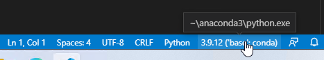

from google.colab import drive
drive.mount('/content/gdrive')1 Python Setup
1.1 VS Code + Anaconda
Note that all the following steps are tested in Windows 10/11. If you use other operation systems please contact me.
- Go to Miniconda download page. Download and install Miniconda, and set things up in the following way.
More details.
- Miniconda is Python + conda, without any unessential packages. We choose this version because it is fast: the download package is small and easy to install.
- After you finish installing Miniconda, you may find the
Anaconda Prompt (miniconda 3)from the start menu. Click it to start using it. - You may use the following command to install packages that is used in this course. More on this will be discussed later.
conda install pandas numpy matplotlib seaborn- If you feel conda is slow, you may change the
conda solverto belibmambausing the following command. It may be faster than the classic conda solver.
conda config --set solver libmamba- Once these packages are installed, you may close the command prompt window and proceed to the next step.
An alternative way.
If you have enough time and space, you may go to Anaconda download page, download and install Anaconda.
Anaconda is Miniconda + tons of preinstalled packages + many other tools that may not be used in this course.
- Go to VS Code download page. Download and install VS Code. Actually Anaconda contains one copy of VS Code. Here I just assume that some of you intall VS Code before Anaconda.
- When installing VS Code, you may accept all default settings. When installing Anaconda, please pay attention to the
PATHsetting.

The first box is unchecked by default. This setting is related to the ability to easily run Python code in Terminals. I recommend you to check it. If you don’t check it during this step, you may add it to the system environment variable PATH manually later.
- The UI of VS Code looks as follows.
Please look at the fifth tab from the left sidebar. It is the Extension tab.

Please search for python and install the first Python extension from Microsoft. It will actually install five extensions. These are all we need for now.
- After all are installed, go to the first Explorer tab on the left side bar, and
Open Folder. This is the working directory for your project.

Choose one folder and start a new .py file.

- If everything is setup correctly, you may see the Python version and environment name at the right lower corner. In our case the environment name is
base. We will need it in the future.

Note that we are not looking at the Python for Language Mode. If you see Select Interpreter there, it means that VS Code doesn’t find your Python interpreter. Please restart VS Code or select it manually, or check whether Anaconda is installed correctly.
To check whether everything is setup correctly, please run the following tests.
- Use
ctrl+shift+pto open the Command Palette, type “Jupyter: Create Interactive Window” and pressenterto open the Jupyter interactive window.
If the interactive window starts and you see the loading infomation of your kernel as follows, especially you see the environment name on the right upper corner, then you get everything correctly. However we will still do more tests.
- In the window type
import numpy as npto test whether you are able to import packages. If you don’t see any error messages then it means good.

- In the editor window, type
import numpy as npand right click the body to chooseRun Current File in Interactive Window, and see whether it runs in interactive window.

- Open the terminal. Please use
Command Promptinstead ofPowershell. Activate the conda environment by type the commandconda activate basein the example above. Please change the name to match your own environment. Ifcondacannot be recognized, please register Python and Anaconda to the system environment path. Please see the next Appendix for details.
1.2 Google Colab
Google Colab is a product from Google Research, that allows anybody to write and execute arbitrary Python code through the browser, and is especially well suited to machine learning, data analysis and education.
Here is the link to Google Colab. To use it you should have a Google account. Otherwise it is very simple to start, since a lot of packages for our course are already installed.
1.2.1 Install packages
If you would like to install more packages, you can type the following code in a code cell and execute it.
%pip install <pkg name>%conda install <pkg name>The drawback here is that Google Colab can only stay for 24 hours. After that, all additionaly installed packages will be earsed. However you may put the installation code mentioned above at the beginning of your notebook and these packages will be installed every time you run the notebook.
1.2.2 Upload files
You may directly upload files to the working directory of Google Colab. This has to be done in the browser. When working with these files, you may just use relative paths.
The drawback here is that Google Colab can only stay for 24 hours. After that, although your .ipynb files will be stores, all other files will be earsed.
1.2.3 Mount Google Drive
One way to let the uploaded files stay in cloud is to upload them to Google Drive, and then load your Google Drive contents from Google Colab.
Goole Drive is a cloud storage service provided by Google. When you register a Google account you will be automatically assigned a Google Drive account. You may get access to it from this link.
Here are the steps to mount Google Drive:
- Upload your files to your Google Drive.
- Run the following codes in Colab code cells before you are loading the uploaded files:
- A window pop up asking you about the permission. Authorize and the drive is mounted.
- To work in directories, the most popular commands are
%ls: list all files and folders in the working directory.%cd+ folder name: Get into a specific folder.%cd..: Get into the parent folder. Then use these commands to find the files your just uploaded.
- Finally you may directly get access to those files just like they are in the working directory.